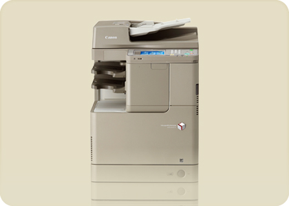

-


-
캐논의 한국 오피셜 웹 사이트
Official Website of Canon in Korea
-
CANON KOREA CONSUMER IMAGING INC.
캐논코리아 컨슈머 이미징
디지털카메라/렌즈/컴팩트 카메라/영상장비/캠코더/포토 프린터/쌍안경/액세서리 -

CANON KOREA BUSINESS SOLUTIONS INC.
캐논코리아 비즈니스 솔루션
복합기/프린터/디지털인쇄기/팩시밀리/스캐너/솔루션/의료기기/OCE제품 -

CANON SEMICONDUCTOR ENGINEERING KOREA INC.
반도체 노광장치 -
TV카메라에 대해서는 CKCI의 페이지를 봐 주세요
-

Official Social Media Account List
공식 SNS 계정 리스트